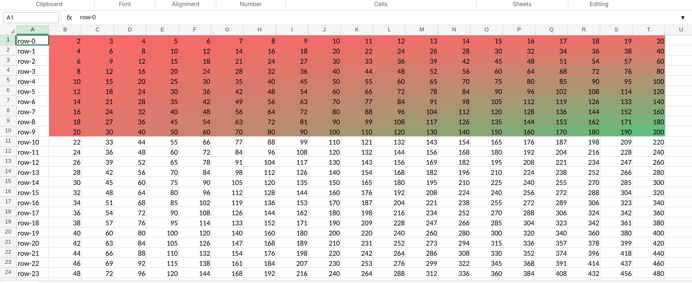
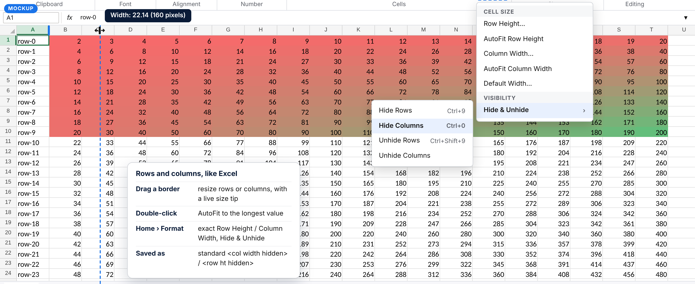
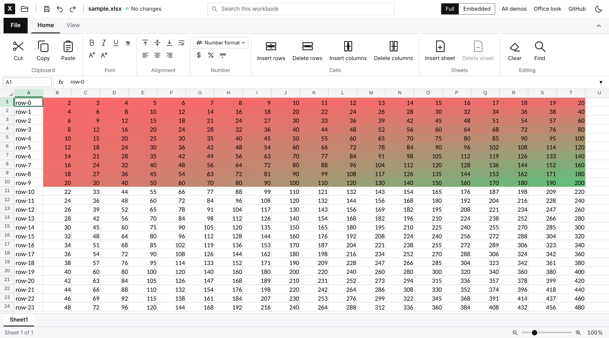
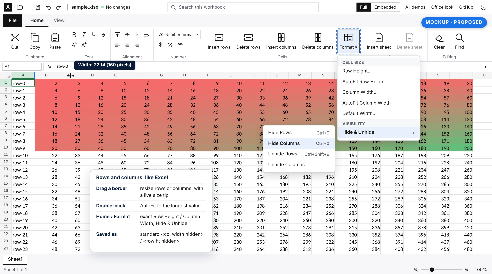

Resize, AutoFit and hide rows and columns by dragging header borders, like Excel
Approve: tap 👍 on the issue · Decline: tap 👎
Close-up of the change




Full screen


Today (dragging the border between column A and B to the right): nothing happens. The cursor never becomes a resize arrow, no width tip appears and the column stays the same, so long labels stay cut off. There is no Format menu for Row Height, Column Width or Hide & Unhide.


Mockup: dragging column A's border shows Excel's resize cursor, a dashed guide and a live 'Width: 22.14 (160 pixels)' tip; double-click AutoFits. A Format button in Home › Cells opens Row Height…, Column Width…, AutoFit and Hide & Unhide (Ctrl+9 / Ctrl+0).
Tap an image to open it full size.
Why
Widening a column so a label or number fits is one of the most common things anyone does in a spreadsheet, and today a value like '########' or a cut-off label cannot be fixed at all. Excel, Google Sheets, OnlyOffice and Collabora all resize on a header-border drag and AutoFit on double-click. Nitro's engine already has row height, column width and hide/unhide edits (ported in #67), so this is mostly pointer handling and the Format menu.
Definition of done
- Hovering a row or column header border shows a resize cursor; dragging shows a guide and a live size tip in Excel units and pixels, and applies on release to every selected row or column, as one undo step.
- Double-clicking a border AutoFits to the widest/tallest content (multi-selection too); Home › Cells › Format has Row Height…, AutoFit Row Height, Column Width…, AutoFit Column Width, Default Width… and Hide & Unhide.
- Hidden rows and columns are skipped in the grid with a visible marker in the headers; Ctrl+9, Ctrl+0 and Ctrl+Shift+9 work, and selecting across a hidden range then Unhide shows it again.
- Saved files keep sizes and hidden state as standard <col>/<row> attributes and reopen in Excel and LibreOffice identically; files opened with hidden or custom-sized columns display them correctly.
- Playwright tests cover drag, double-click AutoFit, the Format menu, hide/unhide shortcuts, undo and save round-trip; Cells stays two rows; bundle-budget and all required checks green.
Approve: tap 👍 on the issue · Decline: tap 👎